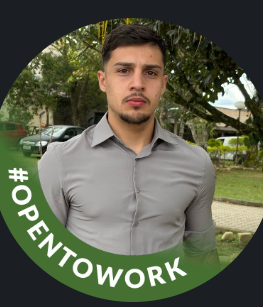

Análise de dados da XP Inc.
Análise histórica da ação da XP para investigar preços, retornos e volatilidade. SQL e dashboard no Power BI fazem parte das próximas etapas.
Sou Andrey Xavier, estudante de Análise e Desenvolvimento de Sistemas. Busco estágio em tecnologia, com interesse em dados, inteligência artificial, desenvolvimento e automação.

A análise da XP Inc. é o projeto atual. Os demais são ideias para desenvolver no futuro, ainda sem implementação. Estudos independentes, sem vínculo com as empresas mencionadas.
Análise histórica da ação da XP para investigar preços, retornos e volatilidade. SQL e dashboard no Power BI fazem parte das próximas etapas.
Organizar oportunidades por área e competências, identificar vagas repetidas e usar IA para resumir os requisitos com base no anúncio original.
Classificar avaliações por assunto e sentimento, reunir reclamações recorrentes e gerar um relatório com exemplos que sustentem a análise.
Detectar campos vazios, duplicidades e formatos inconsistentes em CSVs. Usar IA para explicar os problemas e sugerir correções para revisão.
Consultar materiais fornecidos pelo usuário, explicar conceitos, montar perguntas de revisão e indicar os trechos usados em cada resposta.
Aplicação para organizar vagas, etapas, prazos e anotações. Uma evolução poderá gerar resumos com IA e lembretes configurados pelo usuário.
Curso Análise e Desenvolvimento de Sistemas e busco uma oportunidade de estágio para aplicar meus conhecimentos e evoluir na prática. Minha experiência inclui rotinas administrativas, controle de informações e inteligência comercial.
Atuei na CINPAL como Jovem Aprendiz Administrativo (2021–2022) e Auxiliar de Escritório (2022–2023). Também atuei como Assistente Administrativo Jr. (2023–2025), trabalhando com planilhas, documentos e controles internos.
Também trabalhei em um projeto freelancer de inteligência e prospecção comercial: pesquisa de empresas, organização de leads no Google Sheets, análise de presença digital e uso de IA para pesquisa e produtividade.
Documentos, arquivos, planilhas, relatórios e suporte às atividades administrativas e operacionais.
Organização de pedidos, controles internos em Excel, relatórios e acompanhamento das atividades.
Pesquisa, qualificação e priorização de leads, Google Sheets e IA para pesquisa e produtividade.
Estudos na Alura: Python para Data Science, Análise de Dados, SQL/MySQL, Excel, Google Sheets, Power BI, Automação e Inteligência Artificial.
Concluir a coleta e limpeza do analise-xp-inc e investigar o registro de 26/10 antes de calcular os indicadores.
Calcular preços, retornos e volatilidade sobre a base validada. Definir comparações coerentes e documentar decisões de tratamento.
Organizar SQL, dashboard e README. Apresentar a evolução no LinkedIn, identificando com clareza o que já foi feito e o que ainda está planejado.
Projetos planejados estão identificados. Integrações de IA e resultados de negócio serão apresentados após implementação e validação.